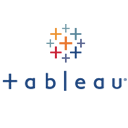

contact
1293 Island Circle,New Harbour Village 2,
Old Harbour,
St. Catherine,
Jamaica
 andrepaulwright@gmail.com
andrepaulwright@gmail.com apaul10
apaul10 apaul10
apaul10 andre-paul-wright
andre-paul-wrightlanguages
English (first)
Spanish (basic)
programming
- Microsoft .NET (VB, VBA, C#, ASP.NET)
- Database (T-SQL, SQL, MDX, DAX)
- SQL Server Database, SQL Server Analaytical Database (Tabular & Multi-dimensional), SQL Server Integration Services
 Front-end (HTML, CSS, JavaScript, jQuery, Bootstrap)
Front-end (HTML, CSS, JavaScript, jQuery, Bootstrap)- CMS (Wordpress, Drupal)
- Android
- DataWarehousing)
software
 Microsoft Visual Studio (VS, SSDT-BI)
Microsoft Visual Studio (VS, SSDT-BI)- Android Studio
- SQL Server Management Studio (DB, SSAS, SSIS)
- Microsoft SharePoint, Dashboard Designer
- Tableau
- Power BI Desktop
- Microsoft Office Suite (Project, Visio, Word, Excel, Access, PowerPoint)
skills
Business Intelligence Architect, Developer & AdministratorSoftware Developer (Desktop, Online, Android)
Data Science & Analytics
Microsoft SharePoint (Developer, Administrator) including BI Features: Dashboard, Scorecard, KPI
IT Project Management
experience
-
JNGI Online - developed online platform tool to allow customers of JNGI (new and existing) to get a quote, purchase insurance, renew their policy, and submit a claim
ASP.NET SQL Server
HTML, JS, CSS, Bootstrap, jQuery
-
Microsoft SharePoint - developed Corporate, division and department websites to facilitate tasks, issue tracking, collaboration, document sharing, and Business Intelligence (Dashboards, Scorecards, KPIs)
Microsoft SharePoint 2016, SharePoint Dashboard Designer, PowerView Microsoft Project, Excel, Visio, Word, PowerPoint
-
Datawarehouse Development - develop data warehouse using Microsoft BI Stack for core business systems: Insurance, Microsoft Dynamics SL (Accounting) and other small sub-systems used in the organization
SQL Server, SSIS (ETL), SSAS Tabular, SSAS Multi-dimensional
Microsoft Visual Studio (SSDT-BI)
 Microsoft Excel
Microsoft Excel
-
Management Report Development - developed reports for the management team at all levels. Reports include key metrics used by the business to help drive the decision making process. Quality checks, automation and cleansing of data was done were required. Different reporting tools are used based on the situation. Descriptive, prescriptive and predictive reports were delivered, and in complex cases, users are shown how to interact with and use the report data. Report data came from multiple sources including: DataMart, Excel Files, Online Data, Insurance Industry Data.
Microsoft SharePoint, SharePoint Dashboard Designer Microsoft Power BI Desktop
Microsoft Excel (PivotTables, Charts)
Tableau
-
Premium Calculator (Broker Portal) - developed an online based portal that would allow insurance brokers/agents to generate motor insurance quote for their customers
ASP.NET SQL Server
HTML, JS, CSS, Bootstrap, jQuery
-
Premium Calculator - developed a centralized app to generate motor insurance quote for JNGI customers, and have the information integrated with the core Insurance system. This application was established as a platform for external applications to later share and communicate data (JNGI Online, Broker Portal)
SQL Server
Microsoft Visual Studio
-
Customer Service Database - developed an application for Customer Service department to help managers and supervisors track service time, to more effectively and efficiently monitor and assign resources accordingly
ASP.NET SQL Server
Microsoft Visual Studio
HTML, JS, CSS, Bootstrap, jQuery
-
Staff Referral Rewards Program - developed an internal online application that allowed staff members to refer persons to the company and get a commission for each converted prospect
ASP.NET SQL Server, SSIS (ETL), SSAS Tabular
Microsoft Visual Studio (VS, SSDT-BI)
Microsoft Excel
-
IT Project Management - played a key role in the success of the following Projects: JNGI Online, Premium Calculator, Staff Referral Rewards and Data Warehouse. Roles included: creating and monitoring Tasks (WBS), attending meetings with subject matter experts (SMEs) and key stakeholders, gave consultation with the decision making process, update documentation for Change Management, create and present Process Flow Diagrams, monitor progress updates from resources to ensure project timelines are met
Microsoft Project, Visio, Word, Excel, PowerPoint
-
System Automation - develop SSIS Packages using ETL tool to automate simple business processes in order to improve operational efficiency and customer experience. Processes include: sending automatic SMS messages to customers using a SMS API, sending automatic HTML emails to customers based on SQL Report data and predefined conditions
SQL Server
Microsoft Visual Studio (SSDT-BI)
Microsoft Excel
-
Web Services Integration - integrated web services from Government with key internal systems to improve data quality, integrated Gateway Provider API with JNGI Online to facilitate credit card transactions
SQL Server
Microsoft Visual Studio (VS, SSDT-BI)
Chrome REST API Client (testing), Web Services (JSON, SOAP, RESTful)
-
User Training & Support - created user manuals for staff and operators. Prepared presentations that outlined system use, system features. This included training for super-users who would then train any new staff and respond to simple queries. Provide technical support for users who have difficulties using the internally developed systems.
Microsoft Word, PowerPoint
education
- 2013 - 2015 MSc in Information Systems , Northern Caribbean University
- 2005 - 2009 BSc in Information Technology, University of Technology
training
- IT Project Management
- Developing a Datawarehouse with Microsoft SQL Server (Tabular, Multi-Dimensional)
- Microsoft SharePoint 2010, 2013, 2016
- Android Development
- Google Analytics, Adwords
side projects
-
Topical Bible - an android app that gives you everyday topics from a Biblical perspective
Android SQLite
-
Nyaamingz - an online restaurant for purchasing lunch with realtime notifications and delivery tracking
Android Firebase
online
-
Skype: apaul10
-
Github: apaul10
-
 StackOverflow: drdre
StackOverflow: drdre
-
LinkedIn:
https://www.linkedin.com/in/andre-paul-wright-b943631b/